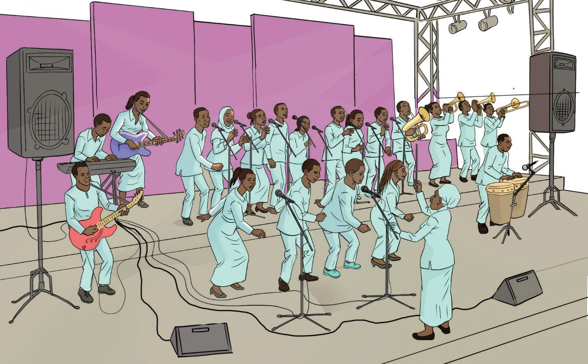

facial expressions, and body language to express emotions and bring the song to life. On the other hand, musicians can match the mood of the lyrics by adjusting their playing style. For example, a gentle piano melody can make a sad song more touching, while strong drum beats can add power to a cheerful song.
(e) Active listening:
In a vocal-instrumental ensemble, singers and instrument players must listen carefully to each other to maintain a balance and harmony. If an instrument or voice is too loud, quick adjustments should be made rather than competing for attention. This technique ensures that all singers and instruments stay in the key.(f) Stage presence and confidence:
Stage presence is the ability of a performer to capture and hold the audience’s attention through his or her confidence, energy and engagement. It involves body language, facial expressions, movement, and interaction with the audience to make the performance more engaging and memorable. In a vocal-instrumental ensemble, performers should maintain good posture, use expressive body language and avoid looking stiff or disengaged. A perfect stage presence and confidence come from thorough preparation before the performance.Figure 6.3 shows the arrangement of singers and instrument players on the stage in a vocal-instrumental ensemble.
